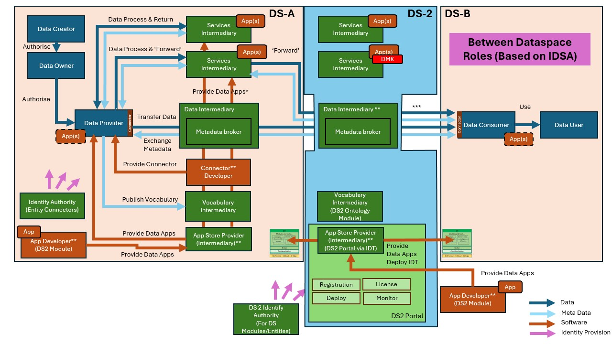
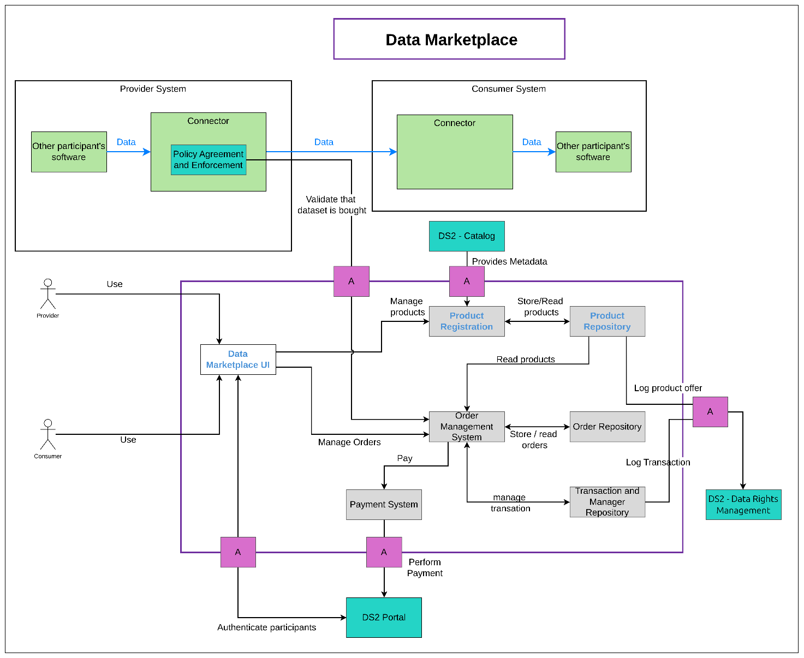
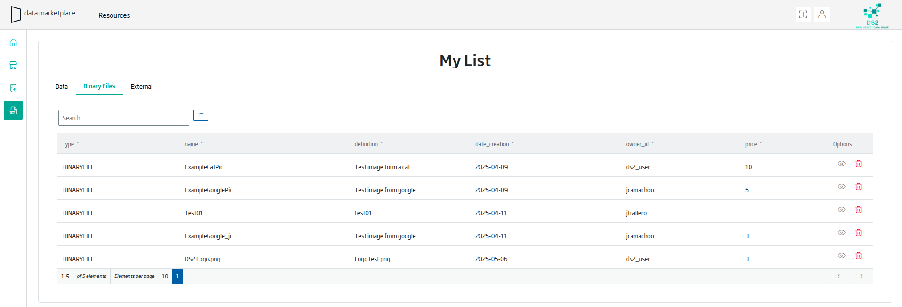

Data Market Place (DMK)
| Project Links |
|---|
| Software GitHub Repository https://github.com/ds2-eu/dmk_module.git |
| Progress GitHub Project https://github.com/orgs/ds2-eu/projects/33 |
General Description
The Data Marketplace Module will provide a marketplace for data and data models. It will allow the registration of data from a catalog, record all transactions, and communicate transactions to any external system if required (e.g. Data Rights Management Module, Clearing House). Data will not be stored in the Data Marketplace Module. It will the capability to support not only datasets but also algorithms.
The Data Marketplace Module allows the registration of data (datasets and APIs) and algorithms as products to be sold. The Data Marketplace will include an interface with a Catalog Module to facilitate Providers to register their products in the Data Marketplace. The Data Marketplace will store the metadata required to perform and control transactions but not the data themselves. Additionally, it will support the registration of data products not in the DS2 Catalogue as algorithms. Consumers will be able to browse available products and purchase those of interest. The Data Marketplace Module will register all transactions and allow external systems, such as the Policy Enforcement Module, to validate if a product has been purchased. For example, it can verify a data purchase before allowing data sharing. It will interface with the Portal Module marketplace to provide registration and payment functionality.
Architecture
The figure below represents the module fit into the DS-DS environment. 
The figure below represents the actors, internal structure, primary sub-components, primary DS2 module interfaces, and primary other interfaces of the module. 
Component Definition
This module has the following subcomponent and other functions:
- Marketplace:
- Data Marketplace UI: This component provides the user interface where data suppliers and data shoppers can access the functionalities of the data marketplace.
- Product Registration: This feature allows suppliers to register data products for sale, including datasets, API access, and algorithms. It will include an interface for incorporating products already available in DS2 product catalogues to prevent duplication and ensure synchronization in product definitions.
- Product Repository: This component stores and provides the required information for each product offered.
- Order Management System: This subcomponent manages orders placed by providers, defines the purchasing process, records any changes in order status, and coordinates all components involved in the purchase. It manages the full life cycle of the orders. This component ensures that all steps in the purchase process are executed correctly and fulfil the required conditions.
- Order Repository: This subcomponent stores orders and their statuses. It is primarily used by the Order Management System to store and retrieve the state of orders. It also provides historical information about orders.
- Payment System: This subcomponent provides payment capabilities to the Order Management System, primarily acting as an intermediary with the payment system implemented in the Portal Module.
- Transaction Manager and Repository: The Transaction Manager will register actions in the Data Rights Management Module and maintain an additional transaction repository for detailed information.
- DS2 Portal: The DS2 Portal Module will be used to obtain and validate the identities of providers when they supply data assets to the Data Marketplace and consumers when they purchase data assets. It is also responsible of payment capabilities.
- Data Rights Management (DRM): The Data Marketplace may log all necessary information in the DRM for accountability in data provision and purchases.
- DS2 Catalog: The Data Marketplace can offer the datasets present in the DS2 Catalog Module to describe data offerings.
- Policy Agreement and Enforcement: The Data Marketplace will be queried by the Policy Enforcement module to obtain additional information if a policy requires a purchase to have been made to obtain data.
Screenshots

Commercial Information
| Organisation (s) | License Nature | License |
|---|---|---|
| Indra | Open Source | Apache 2.0 |
Top Features
- DMK allows DS2 participants to create data offers from their data products in the DS2 catalog.
- Users can search for offers published by other users.
- Users can purchase access to both data and algorithms.
- Algorithms are provided as Docker images with APIs for execution. These are built by the MDT module.
- The Data Marketplace integrates with the PAE module to enable data providers to define policies that require a purchase before access.
- DMK stores all purchases in the DRM to support transaction auditing.
How To Install
It is currently under development and cannot be installed yet. The first installable version will be available by M24.
Requirements
TBC
Software
TBC
Summary of installation steps
TBC
Detailed steps
TBC
How To Use
TBC
Other Information
TBC
OpenAPI Specification
TBC
Additional Links
TBC